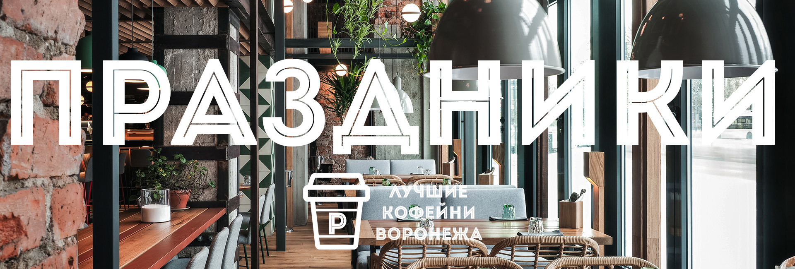

Все Новости
Рады сообщить о том,что в связи с расширением сити кофеен,мы объявляем набор на вакансии!Если ты позитивный, активный ,общительный,комуниктивный,хочешь стать частью растущей команды, то мы ждем тебя в рядах сотрудников кофейни "Руссиано"!Мы предлагаем:
Ниже представлен список вакансий.Нажав на интересующую Вас вакансию,Вы получите подробную информацию,а также номер телефона,по которому вы можете задать вопросы,если они останутся.
Сеть кофеен "Руссиано" приглашает на работу активных, позитивных и ответственных людей на должность официанта.Мы бесплатно обучим этой профессии,а также предоставим возможность карьерного роста в нашей компании.
Твои обязанности:
Предоставить лучший сервис гостям
Помогать гостям сделать выбор блюд и напитков
Консультировать гостей по меню и новинкам
Сеть кофеен "Руссиано" приглашает на работу активных, позитивных и ответственных людей на должность бариста.Мы бесплатно обучим этой профессии,а также предоставим возможность карьерного роста в нашей компании.
Твои обязанности:
Консультировать посетителей по барному меню
Заниматься приготовлением самого вкусного кофе в Воронеже
Узнать составляющие всех классических, а также фирменных напитков и будешь заниматься их приготовлением
Делать классные безалкогольные и алкогольные коктейли
Сможешь создать свой рецепт коктейля
Сеть кофеен "Руссиано" приглашает на работу ответственных людей на должность кассир.
Твои обязанности:
Обеспечивать быстрое и качественное обслуживание по стандартам сети
Проводить расчет Гостей
Сдавать кассовые отчетности
Сеть кофеен "Руссиано" приглашает на работу активных, позитивных и ответственных людей на должность повар.Мы бесплатно обучим этой профессии,а также предоставим возможность карьерного роста в нашей компании.
Твои обязанности:
Приготавливать основные блюда, салатовы и закусоки
Помогать гостям сделать выбор блюд и напитков
Научиться делать вкуснейшие десерты
Постоянно совершенствоваться и учиться новым рецептам у профессионалов
Сеть кофеен "Руссиано" приглашает на работу активных, позитивных и ответственных людей на должность менеджер.Мы бесплатно обучим этой профессии,а также предоставим возможность карьерного роста в нашей компании.
Твои обязанности:
Предоставить лучший сервис гостям
Следить за организацией и контролем работы смены
Заниматься увеличением продаж и прибыли кофейни
Помочь с адаптацией и развитием сотрудников
В нашей сети кофеен 'Руссиано' предусмотрены скидки в многие праздники!Таким образом,неделю после Дня Рождения действует скидка 10% для именниника.Так же существуют скидки в другие праздники.Например,на Международный День Друзей - скидка составляет 5% и т.д.Полный список праздников Вы можете найди ниже.
14 февраля- День святого Валентина (День влюбленных)
23 февраля- День защитников Отечества
3 марта- Всемирный день писателя
21 марта- День Земли
27 марта- Международный день театра
1 апреля- День Смеха (День Дурака)
2 апреля- День единения народов
7 апреля- Всемирный день здоровья
12 апреля- День космонавтики
29 апреля- Международный день танца
1 мая- весны и труда
31 мая– День без табака
1 июня- Международный день защиты детей
12 июня- День России
27 июня- День молодежи в России
27 августа- День российского кино

В нашей кофейне по адресу площадь Ленина,дом 9 в субботу,8 декабря пройдет мастер-класс по другим способов заварки кофе.
Наш мастеркласс по приготовлению кофе и кофейных коктейлей. Обучение включает в себя теоретическую и практическую часть приготовления кофе,а также дегустацию приготовленных напитков.
В ходе мастеркласса наши слушатели успевают приготовить в более 10 различных напитков.Мастер-класс ведет профессиональный бариста.
Данный мастеркласс необходим для любителей и ценителей кофе. Научим правильно и вкусно применять многие другие способы заваривания.
1.Расскажем про кофейную культуру.
2.Познакомим слушателей с методами альтернативного заваривания кофе.
3.Учим заваривать кофе различными способами.
4.Научим подборать кофе и настройке помола для определённых способов приготовления.
Тереотическая часть о появлении кофе.
Кофейные деревья.Виды и различия между ними
Процесс обработки и обжарки кофе.
Разные способы заваривания напитка.
Практика по заварке.
Использование «французского» кофейника.
Использование сифона.
Использование кемекса.
Использование аэропресса.
Cezva (кофе по восточному).
Использование френч-пресса.